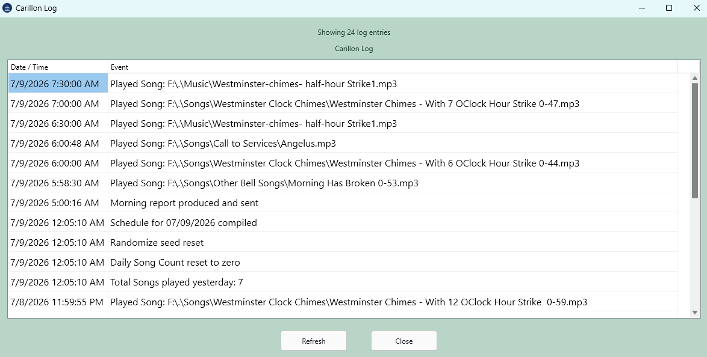

Show Log

Picture 1
Show Log opens a themed log viewer from the main menu. It is placed between Random Music and Help. The log viewer shows Date / Time and Event columns and includes Refresh and Close buttons.
Use Refresh to reload the log file after new activity.
The log viewer reuses the existing window if it is already open.
The displayed time is shown in 12-hour form with AM or PM.
The log is read from the portable logs folder.